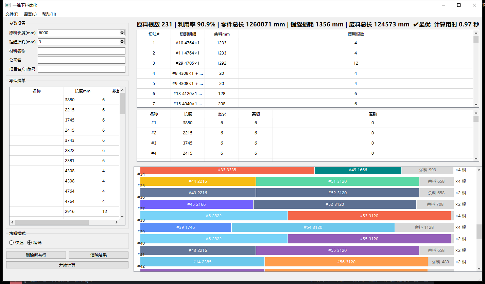

✨ 功能特性
⚡ 双模式求解
快速启发式：千级零件秒出结果；精确模式基于 OR-Tools CP-SAT，求得全局最优解（✔最优），超过 30 秒自动终止并建议改用快速模式。计算时按钮实时显示「正在计算… N 秒」。
📥 便捷录入
表格手工录入（增删改、列宽拖拽），或 Excel 一键导入（含模板下载与逐行校验）。原料长度、锯缝损耗、材料名称均可设置。
📊 结果可视
按比例切割示意图（零件标注长度、余料灰色、相同切法合并 ×N），方案汇总表 + 零件核对表，统计栏显示利用率、废料等关键指标。
📄 报表输出
导出 Excel（含切割示意图）、导出 PDF 报告，可直接打印交车间执行。界面支持中文 / English 双语。
🖥 软件界面

🚀 快速开始
方式一：直接运行（推荐）
从 Releases 下载 一维下料优化.exe，双击即可运行，无需安装 Python。
方式二：源码运行
git clone https://github.com/YOUR-NAME/cutting.git cd cutting uv sync # 需要 Python >= 3.12 与 uv uv run python main.py
🛠 技术栈
| 层 | 技术 |
|---|---|
| GUI | PySide6 (Qt 6) |
| 精确求解 | Google OR-Tools CP-SAT |
| Excel / PDF | openpyxl · reportlab · pillow |
| 工程质量 | uv · pytest（144 项测试）· mypy · ruff |
| 打包 | PyInstaller 单文件 exe |
✨ Features
⚡ Dual Solvers
Fast heuristic solves thousands of parts in seconds; Exact mode (OR-Tools CP-SAT) delivers a provably optimal plan (✔Optimal) and auto-stops after 30 s with a suggestion to switch modes. A live "Optimizing… N s" stopwatch runs on the button.
📥 Easy Input
Manual table entry (add/edit/delete, resizable columns) or one-click Excel import with template download and per-row validation. Stock length, kerf loss and material name are configurable.
📊 Visualization
Proportional cutting diagrams (labeled parts, gray remnants, identical patterns grouped ×N), plan summary + part verification tables, and a statistics bar with utilization and waste.
📄 Reports
Export Excel (cutting diagrams included) and print-ready PDF reports for the workshop. UI available in Chinese and English.
🖥 Screenshot
🚀 Quick Start
Option 1: Run the binary (recommended)
Download 一维下料优化.exe from Releases and double-click — no Python required.
Option 2: Run from source
git clone https://github.com/YOUR-NAME/cutting.git cd cutting uv sync # requires Python >= 3.12 and uv uv run python main.py
🛠 Tech Stack
| Layer | Technology |
|---|---|
| GUI | PySide6 (Qt 6) |
| Exact solver | Google OR-Tools CP-SAT |
| Excel / PDF | openpyxl · reportlab · pillow |
| Quality | uv · pytest (144 tests) · mypy · ruff |
| Packaging | PyInstaller single-file exe |